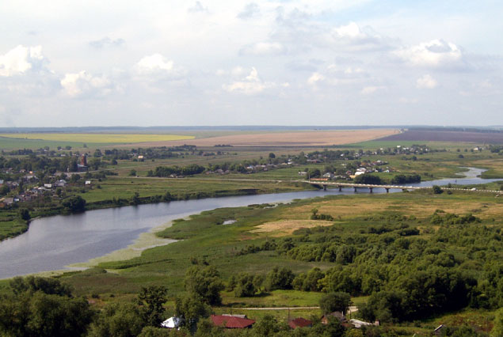

Основание Пронска.
Пронск - один из древнейших городов на территории Рязанской области. Расположен на крутом левом берегу реки Прони в 60 км от г. Рязани.
Поселения на месте современного Пронск возникли очень давно. В трёх километрах от устья реки Керди обнаружена стоянка эпохи палеолита. Археологические раскопки, начавшиеся более 100 лет назад, свидетельствуют, что город козник на месте славянских селений, относящихся к XI веку. Относительно возникновения города существует несколько мнений. Впервые наименования «Пронские» появляются в 1131г. в Никоновской летописи: «В лето 6639…Того же лета князи Рязанстии, и Пронстии, и Муромстии много половец побиша»(«Рукописное собрание кн. М.А. Оболенского»). Пронск упоминается в летописях под 1186 годом как «Прыньск», под годом 1207 – как «Проньск», позже Пронск.
Официально годом основания Пронск считается 1131 год. Название городу дано по реке Проня, хотя существуют другие мнения и легендарные версии. Как говорит предание, в конце XI века, а именно в 1905 году здесь образовалось Пронское княжество, основателем которого был боярин Проня. Кто он и откуда прибыл неизвестно. Известно только, что он был рыбаком, и приезжал на речку Проню ловить рыбу, нашел, что здесь всего много, но что многое нужно обработать. А для этого решил здесь остаться навсегда и вести оседлую жизнь. Он стал приглашать людей желающих трудиться. Такие люди нашлись, примкнули к боярину и завели здесь оседлую жизнь и сильную колонию. И из пустыни образовался оседлый посёлок с его колонистами. Город стоял на площадке, которая с одной стороны была окружена крутыми берегами Прони, а с остальных сторон глубокими оврагами. Он был укреплён деревянными крепостными стенами с башнями и бойницами. Улицы имели радиальную планировку, что обеспечивало доступ к крепостным стенам и башням в момент военной тревоги. Город был застроен деревянными домами. С тех далёких времён сохранилось до наших дней городище, расположенное в южной части современного Пронска на Покровском бугре

Татаро-монгольское нашествие.
В 1237г. грозное бедствие постигло Рязанскую землю – вторглись монголо-татарские полчища Батыя. Попытка Рязанских, Пронских и Муромских князей объединёнными силами остановить нашествие закончилась неудачей. Они сумели нанести Батыю немалый урон, но сами были разбиты и с остатками дружин отступили под защиту стен своих городов. Сдержать натиск громадной орды маленький Пронск не смог. Он был сожжён и разграблен. При раскопках на бывшем Пронском городище нередко на большой глубине появляется слой угля и пепла «батнев слой». В 1947 году на горе Гневна на дне вскрытой землянки обнаружен мужской скилет. Плечо его отмечено следом удара режущего орудия. По мнению археологов, это останки одного из безвестных защитников города. Лаврентьевская летопись скорбно повествовала о разорении Пронска: «Батый виде силы своея много побиено и разгневался зело и нача Рязанскую землю воевати…и град Пронск и Белгород, и Ижеславец разори до основания»…
Упоминаемый город Ижеславец находится на Проне значительно западнее княжеского города. А это значило, что завоеватели подвергли разорению громадный район.
В 1370 г. пронские отряды совместно с рязанскими и серпуховскими оказали помощь Москве в отражение на её похода литовского князя Ольгерда.
Монголо-татарские племена, объединившиеся в начале XIII века в большое феодально-кочевое госсударство под властью полковника Темугина, провозглашенного в 1207 году всемонгольским когоном с именем Чингис-Хана, т.е. великого государя. Чингис-Хан объединил все монгольские племена в единое государство. В поисках новых богатств татаро-монголы в 1211 году как ураган обрушились на Северный Китай, затем завоевали лежавшую к востоку от Каспийского моря Хорезмскую империю, прошли с огнём и мечом Северный Иран и вторглись в пределы Закавказья. Их не остановили даже Кавказские горы. Тяжёлые времена надвигались на русскую землю. В 1227 году Чингис-Хан умер. Однако, его идеи мирового завоевания бали восприняты ханом Батыем – внуком Чингис-Хана. Выступив в 1236 году Хан-Батый начал завоевательный поход на Запад. В 1237 году он подошёл к южным рубежам Рязанской земли и потребовал от Рязанского князя десятой доли всего имущества и людей.
Рязанцы из поколение в поколение, воспитывавшихся в жестоких схватках с врагами, люди, по словам летописцев, «дерзкие и буйные», не могли пойти на поклон к ненавистному противнику. Они ответили грозному хану: «Когда нас в живых не будет, тогда всё ваше будет». В гордом ответе Рязанцев звучали мужество и надежда на помощь со стороны других княжеств. Рязанский князь Юрий Игоревич одновременно с ответом хану послал своих племянников во Владимир и Чернигов с просьбой о военной помощи. Своего сына Фёдора с богатыми подарками в стан Батыя. Однако стремления Рязанского князя не увенчались успехом. Его сын Фёдор погиб во вражеском стане, а Владимирские и Черниговские князья отказались направить свои полки на помощь Рязани. Видя огромное численное превосходство врага. Рязанцы вернулись в город и начали готовиться к отпору вражеских атак. На защиту города поднялось всё население. Жители окрёстных сёл, наскоро вооружась, оставляли свои очаги и спешили на помощь горожанам. Татаро-монголы полностью разрушили города: Пронск, Белгород и Ижеславец, жители этих городов были почти поголовно истреблены. В середине декабря 1237 года кровавое зарево пожарищ плотным кольцом охватило древнюю столицу Рязанской земли. Многочисленное войско врага подошло к крепостным стенам Рязани и начали осаду города.
Зима значительно ослабила боеспособность города. Морозы сковали воды Оки, Серебрянки и крепостных рвов. Враги переправлялись на льду. Пять дней кипел горячий бой. Пять дней Рязанцы не сходили со стен своего города, отражая атаки хорошо вооружённого, опытного врага. От татарских зажигательных снарядов – горшков с нефтью – Рязань превратилась в большой костёр. Мужественные защитники города гибли в огне, в дыму, под градой камней, летевших через стены с катапульт, под дождём стрел. А на штурм шли всё новые и новые силы врага. На шестой день рухнула часть городской стены. Полчища через пролом ворвались в город. Началась жестокая рукопашная битва на улицах города. Безвестный автор древнего сказания, восторгаясь стойкостью и мужеством защитников Рязани писал: «Удальцы же и резвецы рязанские так крепко бились, что даже земля под ними стонала и Батыевы полки пришли в смятение». Однако, численное превосходство врагов было слишком велико, и рязанцы «всё равно нашли и испили единую общую чашу смерти, все полегли там вместе». Взбешённые стойкостью рязанцев, Батый приказал сжечь город, а жителей поголовно уничтожить. Так от большого, богатого города Северо-Восточной Руси, по словам летописца, остались только дым, земля и пепел. В одном из старинных сказаний повествуется о том, как, несмотря на жестокое разорение Рязанской земли, оставшиеся в живых Рязанцы не сложили оружия, не думали идти на поклон к всесильному врагу, не перестали мужественно сражаться с ним за свободу и честь своего Отечества. Предание сообщает, что Рязанский боярин Евпатий Коловрат собрал дружину в 1700 храбрецов и начал героическую партизанскую войну с татарскими захватчиками. Войны Евпатия Коловрата смело шли по стопам врага, нападали на его отряд и уничтожали их, нанося немалый урон татарам. Неожиданное появление народных мстителей там, где их не ожидали наводило страх на захватчиков, которые говорили: «Ели бо люди крылатые и не имеющие смерти, - так крепко и мужественно ездя, быешеся один с тысящею, а два с тьмою». Руинами сёл и городов был отмечен путь татаро-монгольских полчищ. До сих пор даже исследователям неизвестно, где находились такие древние Рязанские города, как Ожск и Свирельск, Дубок, Кир-Михайлов, Казарь и Ижеславец. Но потери татаро-монголов были очень велики и Батый поспешил отойти к Волге. После этого монголо-татары ещё не раз заходили на Рязанскую землю. В 1270 году в орде был предан страшной и мучительной смерти Рязанский князь Роман Ольгович. С 1273г. по 1297 годов кочевники 15 раз предпринимали походы на Русь. И почти всегда на их пути лежала Рязанская земля
Летописи особенно отмечают 1278 год, когда «Татарово прихо дили на Рязань и много зла сотворили. Жестокостью вписал своё имя в историю Ерастой Ордынский, Темиров сын воевавший Рязань в 1288 году.
В 1293 году произошёл страшный погром земли Дедюневой ратью. Страшная картина представляла из себя Рязанская земля в период татаро-монгольского нашествия. Все наиболее крупные города были превращены в руины, сёла и деревни сожжены, лучшая часть мужского населения пала в борьбе с врагом, большое количество мирных жителей были угнаны во вражеский полк. У оставшихся в живых Рязанцев не осталось ни крова, ни пищи. Требовались огромные усилия народа, чтобы возродить к жизни до крайности разорённую Рязанскую землю. Татарское нашествие, уничтожившие материалбные и духовные ценности, надолго задержало экономическое и духовное развитие русского народа.
Из всех областей Руси Рязанской земле выпала наиболее тяжелая участь. Являясь военным форпостом на юге и востоке Руси, она не знала отдыха от татарских набегов. Документальные источники переполнены краткими волнующими записями о жизни Рязанской земли в XIII-XIV столетиях. Налёты татарских отрядов следовали один за другим, и каждый раз Рязанцы грудью вставали на защиту своих семей и очагов.
Осенью 1378 года вновь пролилась кровь защитников Рязанской земли. Опустошая всё на своём пути отряд врага вторгся на Рязанщину. Но многое изменилось на Руси, со времени нашествия хана Батыя. Московский князь Дмитрий Иванович, как только получил известие о приближении татар, поднял в поход свои дружины и двинулся навстречу врагу.
В пути к нему присоединился Пронский князь Данил со своим войском. Русское войско быстрым маршем миновало земли Московского княжества, вступило в пределы Рязанской земли и Северо-западнее Переяславля Рязанского, на берегу реки Воже встретило врага. На Воже противники простояли несколько дней, разделённые узкой лентой реки.
Московский князь Дмитрий Иванович решил заставить Бегича сражаться на левом берегу реки, с пересечённой местностью, неудобной для маневрирования конницы. Расчёт князя Дмитрия оказался правильным.
Когда 11 августа во второй половине дня Бегич погнал свои орды через Вожу, намереваясь смять русских, и затем бить их по частям, русские войска разгадали замысел врага и не стали мешать переправе татар через реку. Бой был жесток и краток. Враг не выдердал его и в полном смятении бросился назад за Вожу. Усердно пришлось тогда поработать и русскому мечу и русскому копью. Заалела тихая Вожа от крови вражеской.
«А нашли в след их гоняющие, бющие, секуще, колюще и на по рассекающе, убиша их множество, а иные в реце истопилися и бежали татарове всю мощь» - такими словами описывает битву на Воже древний летописец. Поражение татар было полное. На берегах Вожи нашла свой конец бесславный лучшая часть татарского войска вместе с его предводителем, опытным военачальником Мурзою Бегичем. Здесь же были убиты татарские князья: Хазибей, Ковергуй, Карабалук и Костров.Посрамлённая на Воже орда с сожалением вспоминало своё былое могущество.
И Мамай мечтал о возвращении этого могущества, решил как можно скорее выступить против крепнущей Москвы сам. Решающая битва на Куликовом поле в 1380 году между татарами и руководимыми Московским князем Дмитрием Ивановичем объединенными русскими войсками окончилась полным разгромом основных сил Золотой Орды.
Свыше шести столетий минуло со дня Волжской битвы, но память о замечательной победе русского оружия над татаро-монгольскими захватчиками не померкла до наших дней. Не мало рассказов и приданий о славной битве до сих пор бытует среди жителей селений, раскинувшихся на берегах Вожи в пределах Рыбновского района Рязанской области
Из уст в уста передаются рассказы о том, что однажды из реки были извлечены богатые нагрудные украшения в виде массивных металлических блях, покрытых восточным орнаментом и являющиеся частью вооружения одного из татарских князей. А в 1939 году в одном из Волжских омутов рыбаки выловили изготовленную из позолоченных пластин и также богато украшенную дорогую кольчугу, которая принадлежала крупному татарскому военачальнику, нашедшему на берегах Вожи свой бесславны конец под ударом могучего русского мяча.